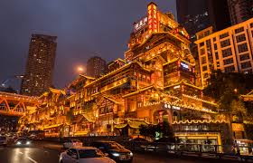
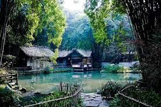

Day 1
抵達山城重慶，索道過江魔幻夜
📅 日期：2025/12/06 (六)
🌤️
天氣預報
多雲 | 溫度：8-15°C | 濕度：75% | 建議穿著：羽絨外套、保暖衣物

行程：
- 下午 (交通)：16:05 降落重慶江北機場 (CKG)。搭乘輕軌 3 號線至牛角沱站，轉乘 6 號線至小什字站，步行至重慶解放碑亞朵飯店辦理入住。
- 夜晚探索：前往洪崖洞，體驗重慶獨特的魔幻夜景。
預計時間安排：
- 16:05 - 抵達重慶江北機場 (CKG)
- 17:00 ~ 18:00 - 搭輕軌前往飯店，辦理入住
- 18:30 ~ 20:00 - 晚餐於解放碑附近
- 20:00 ~ 22:30 - 洪崖洞夜景 → 解放碑步行街
💰 預估花費
機場→飯店交通：
¥10
晚餐：
¥80-120
景點門票：
免費
當日總計：
¥90-130
小貼士：從機場至飯店約40分鐘車程。飯店位置便利，步行可到解放碑、洪崖洞等景點。輕軌是重慶最佳交通選擇，可使用重慶交通卡或手機支付。
🍜 今日美食推薦
⚠️ 不吃辣提醒：點餐時務必說「不要辣」或「鴛鴦鍋」（火鍋）、「清湯」（麵食），當地的「微辣」對不吃辣的人來說還是很辣！
✅ 不辣/微辣推薦：
- 鴛鴦火鍋 - 火鍋店都可選擇鴛鴦鍋（一半清湯一半辣湯）｜人均：¥80-150
- 重慶抄手（清湯） - 「吳抄手」可選清湯，類似餛飩（洪崖洞附近）｜人均：¥18-30
- 重慶小面（清湯） - 點餐時說「清湯小面，不要辣」｜人均：¥15-25
- 重慶豆花飯 - 豆花本身不辣，配菜可選不辣｜人均：¥25-40
🌶️ 辣味菜品（需避開或要求不辣）：
- 麻辣火鍋 - 建議選鴛鴦鍋，只涮清湯那邊
- 酸辣粉 - 天生就辣，不建議嘗試
Day 2
探秘烏江畫廊，尋訪上古九黎城
📅 日期：2025/12/07 (日)
☁️
天氣預報
陰天 | 溫度：6-13°C | 濕度：80% | 建議穿著：厚外套、防風衣物
行程：
- 本日行程：參加【烏江畫廊 & 蚩尤九黎城】一日遊。
- 行程精華：欣賞壯麗的烏江畫廊 (《變形金剛》取景地)，並探訪蚩尤九黎城，感受宏偉的苗族建築群與蚩尤文化。
- 夜晚回歸：回到市區，到十八梯感受新舊重慶交融的獨特氛圍。
預計時間安排 (一日遊)：
- 07:00 - 重慶市區 (飯店附近) 集合出發
- 11:00 ~ 13:00 - 烏江畫廊景區遊覽 (含午餐)
- 14:30 ~ 16:30 - 蚩尤九黎城遊覽
- 17:00 - 集合返程
- 20:30 ~ 21:30 - 抵達重慶市區 → 十八梯夜景/晚餐
💰 預估花費
一日遊費用：
¥280-350
午餐（含）：
已含
晚餐：
¥60-100
當日總計：
¥340-450
小貼士：此為長途一日遊 (車程約 3-4 小時單趟)，飯店附近有集合點。務必早出發，並準備好零食和水。參加一日遊通常包含來回交通，較為省心。
🍜 今日美食推薦（晚餐）
✅ 不辣/微辣推薦：
- 重慶豆花飯（不辣） - 「蛙花園豆花」，豆花本身清淡，可要求配菜不辣｜人均：¥25-40
- 重慶小面（清湯） - 「板凳面」點清湯小面（較場口）｜人均：¥15-25
- 重慶抄手（清湯） - 類似餛飩，湯底清淡｜人均：¥18-30
🌶️ 辣味菜品（避開）：
Day 3
古鎮慢時光與山城不夜天
📅 日期：2025/12/08 (一)
🌦️
天氣預報
陣雨 | 溫度：7-14°C | 濕度：85% | 建議穿著：防水外套、雨傘
行程：
- 上午至下午 (交通)：搭乘輕軌 1 號線到磁器口站。在石板路上尋找地道小吃。
- 中午：華禮宴 (重慶麗晶酒店) 享用精緻午餐。
- 傍晚至深夜 (交通)：搭乘輕軌 1 號線轉 6 號線到紅旗河溝站，轉 3 號線至觀音橋站。晚餐後可接著探索「不夜城」的九街 (9th Street)。
預計時間安排：
- 09:30 ~ 12:00 - 磁器口古鎮遊覽與小吃體驗
- 12:30 ~ 14:00 - 華禮宴 (重慶麗晶酒店) 午餐
- 15:00 ~ 17:30 - 觀音橋商圈購物/休閒
- 18:00 ~ 22:00 - 晚餐 → 九街 (9th Street) 體驗夜生活
💰 預估花費
輕軌交通：
¥15
古鎮小吃：
¥40-60
華禮宴午餐：
¥150-250
晚餐+夜生活：
¥100-200
當日總計：
¥305-525
小貼士：重慶市內景點間都可依靠輕軌到達，方便快捷。飯店到磁器口古鎮約20分鐘車程。九街是潮流聚集地，夜生活豐富，搭乘滴滴打車 (Didi) 也很方便。
🍜 今日美食推薦
✅ 不辣/微辣推薦：
- 磁器口陳麻花（不辣零食） - 甜味或椒鹽口味，不辣的伴手禮｜人均：¥20-40
- 磁器口糍粑（不辣甜點） - 糯米製品，甜味為主｜人均：¥10-20
- 華禮宴（精緻粵菜） - 重慶麗晶酒店，可選不辣菜色（預訂推薦）｜人均：¥150-250
- 重慶烤魚（清蒸/微辣） - 可選清蒸或番茄味，避開麻辣口味｜人均：¥60-100
- 鹽水鵝（微辣可調整） - 「胖子媽鹽水鵝」可要求不辣醬料｜人均：¥70-120
🌶️ 辣味菜品（避開）：
Day 4
勇闖武隆，見證大自然的鬼斧神工
📅 日期：2025/12/09 (二)
☀️
天氣預報
晴天 | 溫度：5-12°C | 濕度：70% | 建議穿著：多層次保暖、登山鞋
行程：
- 本日行程：參加【武隆】一日遊。
- 行程精華：深入《滿城盡帶黃金甲》拍攝地，探索雄偉的【天生三橋】與【龍水峽地縫】，並體驗玻璃觀景台。
- 交通：一日遊行程將包含重慶市區至武隆的來回交通及景區接駁。
預計時間安排 (一日遊)：
- 07:30 - 重慶市區 (飯店附近) 集合出發
- 11:30 ~ 13:00 - 抵達武隆，景區內用餐
- 13:30 ~ 15:30 - 天生三橋遊覽
- 16:00 ~ 17:30 - 龍水峽地縫遊覽
- 17:30 - 集合返程
- 21:00 - 抵達重慶市區
💰 預估花費
一日遊費用：
¥350-450
午餐（含）：
已含
玻璃觀景台：
¥30
當日總計：
¥380-480
小貼士：‼️ 行李提醒：建議輕裝上陣，景區內步行距離長，請務必穿著舒適好走的鞋子！參加一日遊通常包含來回交通，較為省心。
🍜 今日美食推薦
一日遊午餐已包含在行程內。晚上返回市區可選擇：
✅ 不辣/微辣推薦：
- 泉水雞（微辣可調整） - 「南山泉水雞」可選清湯或微辣口味｜人均：¥60-90
- 鴛鴦火鍋 - 「珮姐老火鍋」選鴛鴦鍋，涮清湯那邊｜人均：¥80-150
- 重慶烤魚（清蒸） - 選清蒸或番茄味｜人均：¥60-100
Day 5
移步天府之國，初探繁華與不夜
📅 日期：2025/12/10 (三)
🌤️
天氣預報
多雲轉晴 | 溫度：6-14°C | 濕度：75% | 建議穿著：輕便外套、舒適鞋
行程：
- 上午 (交通)：從飯店步行至小什字站搭乘輕軌 6 號線至小龍坎站，轉 1 號線至沙坪壩站，步行至重慶西站搭乘高鐵前往成都東站 (車程約 1.5 - 2 小時)。
- 下午：抵達成都東站後，搭乘地鐵 2 號線至東門橋站，轉 3 號線至市二醫院站，步行至成都春熙路文殊院地鐵站亞朵S飯店入住，隨後前往春熙路或太古里。
- 夜生活：晚餐後可前往錦里古街或九眼橋酒吧街體驗成都夜生活。
預計時間安排：
- 09:00 ~ 10:00 - 飯店退房，前往重慶西站
- 10:28 ~ 12:19 - 搭乘高鐵 (重慶西→成都東)
- 12:30 ~ 13:30 - 搭地鐵至飯店，辦理入住
- 14:00 ~ 15:00 - 午餐於飯店附近
- 15:30 ~ 18:00 - 春熙路/太古里 閒逛
- 18:30 ~ 22:30 - 晚餐 → 錦里古街 (或九眼橋酒吧街)
💰 預估花費
重慶西→成都東高鐵：
¥154
輕軌/地鐵交通：
¥20
午餐+晚餐：
¥120-180
購物/消費：
¥100-300
當日總計：
¥394-654
小貼士：從飯店至重慶西站約40分鐘車程。成都市區交通以地鐵為主，飯店靠近文書院地鐵站，交通便利。建議購買天府通交通卡或使用 App 乘車碼。
🍜 今日美食推薦
✅ 不辣/微辣推薦：
- 鴛鴦火鍋 - 「大龍燚」、「蜀大俠」選鴛鴦鍋，清湯涮菜｜人均：¥80-150
- 龍抄手（清湯） - 「龍抄手」總店，類似餛飩，清湯不辣｜人均：¥25-40
- 賴湯圓（甜點） - 湯圓甜品，完全不辣｜人均：¥15-25
- 鐘水餃（原味/紅油分開） - 可要求不放紅油，只要原味醬料｜人均：¥20-35
- 三大炮（甜點） - 糯米甜品，不辣｜人均：¥10-20
🌶️ 辣味菜品（需特別說明）：
- 擔擔麵、缽缽雞 - 傳統做法很辣，點餐時要求「不辣」或「微辣」
Day 6
青城山一日遊 & 都江堰夜間燈光秀
📅 日期：2025/12/11 (四)
🌫️
天氣預報
多雲有霧 | 溫度：4-11°C | 濕度：85% | 建議穿著：厚外套、登山鞋、防霧眼鏡
行程：
- 本日行程：參加【青城山一日遊】，傍晚返回市區後前往觀賞都江堰夜間燈光秀。
- 行程精華：遊覽道教聖地青城山，下午返回市區，晚上欣賞都江堰夜間燈光秀。
- 交通：一日遊包含成都市區至青城山的來回交通，晚餐後自行前往都江堰景區。
預計時間安排：
- 07:30 - 成都市區 (飯店附近) 集合出發
- 09:00 ~ 13:00 - 青城山遊覽 (建議搭乘索道節省體力)
- 13:30 ~ 14:30 - 青城山景區午餐
- 15:00 - 搭乘旅遊車返回成都市區
- 16:30 - 抵達飯店附近，休息
- 18:00 ~ 19:00 - 晚餐
- 19:30 ~ 21:00 - 前往都江堰觀賞夜間燈光秀
- 21:30 - 返回飯店
💰 預估花費
青城山一日遊：
¥180-250
索道費用：
¥60
都江堰夜間燈光秀：
¥80-120
晚餐+交通：
¥80-120
當日總計：
¥400-550
小貼士：因安排晚間燈光秀，今日參加青城山、都江堰一日遊。
🍜 今日美食推薦
✅ 不辣/清淡推薦（今日很適合不吃辣的你！）：
- 青城山素齋 - 道觀素齋以清淡為主，很少辣味｜人均：¥40-80
- 都江堰豆腐腦 - 清淡豆花小吃，可選不辣醬料｜人均：¥10-20
- 都江堰青城老臘肉 - 煙燻風味，不辣｜人均：¥30-50
Day 7
峨眉金頂衝刺與樂山大佛遊船
📅 日期：2025/12/12 (五)
❄️
天氣預報
晴天有霜 | 峨眉山頂：-2~5°C | 樂山：8-15°C | 建議穿著：羽絨服、保暖內衣
行程：
- 本日行程：參加【峨眉山金頂 + 樂山大佛遊船】一日遊。
- 行程精華：上午衝刺佛教聖地【峨眉山金頂】，感受雲海佛光。下午搭乘遊船，從江面完整觀看【樂山大佛】全貌。
- 交通：一日遊包含成都至峨眉/樂山全程接駁、景區巴士與纜車。
預計時間安排 (超長一日遊)：
- 06:30 - 成都市區 (飯店附近) 集合出發
- 10:00 ~ 12:30 - 峨眉山金頂 (含接駁車/纜車時間)
- 12:30 ~ 13:30 - 轉移至樂山 (含午餐)
- 14:30 ~ 16:30 - 樂山大佛遊船觀景
- 17:00 - 集合返程
- 21:00 ~ 22:00 - 抵達成都市區
💰 預估花費
一日遊費用：
¥450-600
午餐（含）：
已含
纜車+接駁車：
¥120
遊船票：
¥70
當日總計：
¥640-790
小貼士：‼️ 極限挑戰：這是結合峨眉山登頂和樂山大佛遊船的超長程一日遊 (預計超過 12 小時)。請務必儲備體力，並穿著保暖衣物！飯店附近有集合點，參加一日遊通常包含來回交通，較為省心。
🍜 今日美食推薦
一日遊午餐已包含在行程內。
✅ 不辣/清淡推薦：
- 峨眉山雪魔芋（清淡） - 峨眉山特色，涼拌類可選不辣｜人均：¥20-40
- 峨眉豆腐腦（不辣） - 豆花小吃，清淡爽口｜人均：¥10-20
- 樂山甜皮鴨（不辣） - 樂山特色滷味，甜味為主｜人均：¥30-50
🌶️ 辣味菜品（避開）：
- 缽缽雞、冒菜 - 傳統做法很辣，如果要吃請務必要求不辣
Day 8
成都美食、詩聖故里與夜生活體驗
📅 日期：2025/12/13 (六)
🌤️
天氣預報
晴朗 | 溫度：7-15°C | 濕度：65% | 建議穿著：輕便外套、舒適休閒裝

行程：
- 上午 (早餐 & 詩聖故里): 前往玉林菜市場品嚐道地早餐 (肥腸粉、鍋盔)，隨後前往附近的杜甫草堂感受詩意氛圍。
- 中午 (午餐): 搭乘地鐵前往建設路小吃街一路吃過去，品嚐各種網紅和本地美食。
- 下午 (下午茶 & 休息): 在人民公園的茶館點一杯蓋碗茶，體驗成都人「巴適」的精髓，還可以體驗掏耳朵服務。
- 晚上 (晚餐 & 夜生活): 前往九眼橋或蘭桂坊享受成都夜生活，體驗當地夜間文化。
預計時間安排：
- 08:00 ~ 09:00 - 飯店出發，前往玉林菜市場享用早餐
- 09:00 ~ 09:30 - 從玉林前往杜甫草堂（步行或短程地鐵）
- 09:30 ~ 11:30 - 杜甫草堂詩意遊覽
- 12:00 ~ 14:00 - 建設路小吃街午餐美食探索
- 14:30 ~ 16:30 - 人民公園茶館品茶/休息/掏耳朵
- 17:00 ~ 22:00 - 晚餐 → 九眼橋夜生活體驗
💰 預估花費
地鐵交通：
¥15
杜甫草堂門票：
¥50
早餐+小吃街：
¥80-120
人民公園茶館：
¥30-50
晚餐+夜生活：
¥120-200
當日總計：
¥295-435
小貼士：交通路線：飯店（市二醫院站）→ 地鐵3號線到衣冠廟站，轉5號線到神仙樹站（玉林路附近）→ 吃完早餐後步行或搭5號線到高升橋站（杜甫草堂）→ 地鐵7號線到建設路站 → 地鐵回到人民公園站 → 最後搭地鐵或打車到九眼橋。玉林菜市場和杜甫草堂距離很近，順路安排最省時間！
🍜 今日美食推薦（重點美食日！）
今天是成都美食巡禮日，但不用擔心，很多都有不辣選項！
✅ 不辣/清淡推薦：
- 玉林早餐 - 鍋盔（不辣） - 酥脆餅類，可選牛肉或椒鹽口味｜人均：¥10-20
- 玉林早餐 - 豆漿油條（不辣） - 傳統早點，完全不辣｜人均：¥10-15
- 串串香（清湯） - 「袁記」可選清湯鍋底，選不辣的食材涮｜人均：¥50-80
- 蒼蠅館子 - 「明婷飯店」點回鍋肉、宮保雞丁時要求「不辣」或「微辣」｜人均：¥40-70
- 建設路 - 甜水麵（微辣可調） - 點餐時要求不放辣椒油｜人均：¥12-20
- 建設路 - 燒烤（不辣串） - 選孜然烤串，避開辣味串｜人均：¥30-60
- 人民公園茶館（不辣） - 「鶴鳴茶社」蓋碗茶 + 掏耳朵，完美休息｜人均：¥30-60
- 甜點推薦 - 三大炮、糖油果子、葉兒粑（都不辣）｜人均：¥10-20
🌶️ 辣味菜品（需特別說明或避開）：
- 肥腸粉、冒菜、兔頭 - 傳統做法非常辣，不建議嘗試（兔頭即使要求不辣也有基本辣度）
- 夫妻肺片 - 紅油菜品，如果要吃請特別要求「少放紅油」或「紅油另外給」
Day 9
蓉渝穿梭，踏上歸途
📅 日期：2025/12/14 (日)
☁️
天氣預報
陰天 | 溫度：6-12°C | 濕度：80% | 建議穿著：舒適保暖外套
行程：
- 上午 (交通)：飯店步行至市二醫院站搭乘地鐵 3 號線至春熙路站，轉 2 號線至成都東客站，搭乘高鐵前往重慶西站。
- 下午 (交通)：抵達重慶西站後，步行至輕軌站搭乘環線至謝家灣站，轉 5 號線至重慶江北國際機場站 (CKG)。
- 傍晚：抵達機場後辦理登機手續，搭乘 17:20 的班機，返回溫暖的家。
預計時間安排：
- 08:00 ~ 09:00 - 飯店退房，前往成都東站
- 09:37 ~ 11:31 - 搭乘高鐵 (成都東→重慶西)
- 12:00 ~ 13:00 - 重慶西站搭乘輕軌至機場 (CKG)
- 13:30 - 抵達重慶江北國際機場，辦理登機
- 17:20 - 班機起飛，踏上歸途
💰 預估花費
成都東→重慶西高鐵：
¥154
地鐵/輕軌交通：
¥20
早餐/簡餐：
¥40-60
當日總計：
¥214-234
小貼士：‼️ 重要提醒：成都東站到重慶西站，高鐵車程約 1.5 小時。從重慶西站至江北機場約40分鐘車程。請預留 3 小時以上的轉機和報到時間，以免耽誤國際航班。飯店至成都東站約30分鐘車程。